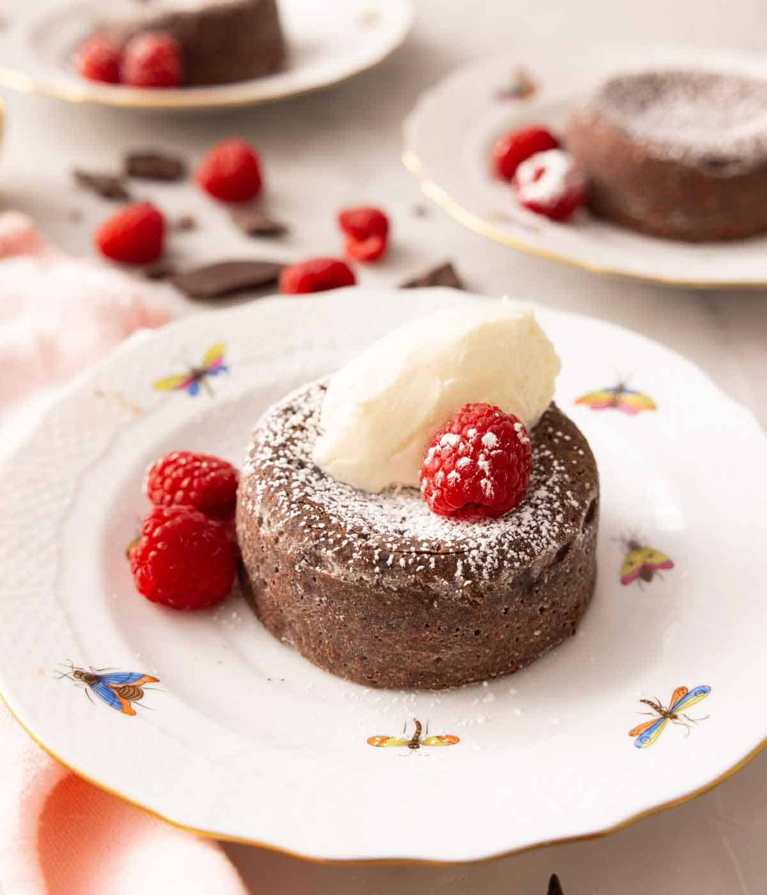

Home
Lava Cake

A rich and chocolatey dessert recipe thats easy to make
Equipment
- Ramekins
- Baking Sheet
- Double boiler, can use microwave at 30 seconds inerval
- Electric or stand mixer
- Mixing Bowls
Ingredients
8 Servings
- ½ cup unsalted butter (113g)
- 6 ounces bittersweet chocolate chopped (168g)
- 2 large eggs
- 2 large egg yolks
- ¼ cup granulated sugar (50g)
- ⅛ teaspoon salt
- 2 tablespoons all-purpose flour
Insturctions
- Preheat the oven to 450F. Butter and lightly flour 6 (4- to 5-ounce) ramekins and place them on a baking sheet
- Combine the butter and chocolate in a double boiler and melt over low heat, stirring until smooth.
Or, place the butter and chocolate in a microwave-safe bowl and microwave on high, stirring every 30-seconds until melted. Whisk together until smooth.
- In a large mixing bowl, combine the eggs, egg yolks, sugar, and salt. Beat on medium speed until thick and pale yellow.
Fold the chocolate mixture and flour into the egg mixture until well combined. Divide the batter among the prepared ramekins.
- Bake for 6 to 8 minutes or until the sides of the cakes are firm set but the center is jiggly. Let the cakes cool in the ramekins for 1 minute.
- Place a small dessert plate over the top of each ramekin and carefully turn it over, inverting the cake onto the plate. Let stand for about 10 seconds,
then remove the ramekin to unmold the cakes. Sift powdered sugar on top and garnish with berries, if desired. Serve immediately.
Notes
- Do not pack the flour into the measuring spoon. Fluff the flour and then sprinkle it into the tablespoons.
You do not want to add too much flour to the lava cake batter as it'll make the center firm.
- Make sure the oven is fully heated before adding the ramekins inside. The high temperature helps the exterior
of the cake bake faster than the inside. This leaves you with the exterior perfectly cooked while the chocolate lava filling stays gooey!
- Use room temperature eggs, so they mix into the batter without over-mixing. Place your eggs in a bowl of warm tap water if they are cold.
- Keep a very close eye on the lava cakes in the oven as you do not want them to overbake. The center should still be jiggy.